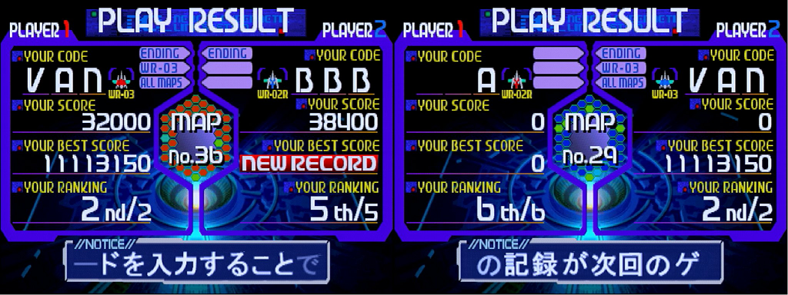
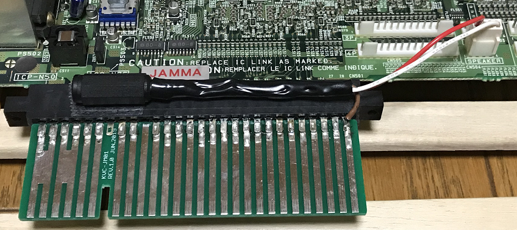
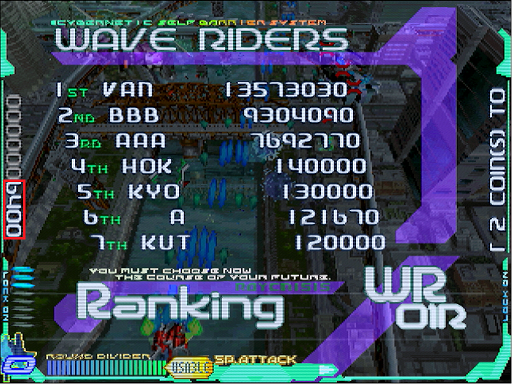

AC版の小ネタ
隠しコマンド
コイン投入後の画面で入力すると、以下の効果が得られます。いずれもそのプレイのみで、併用可能。一番下以外、スコアは保存されません1。
- 上右下左AAABCCCC：任意のマップが選択可能になる
- 上右上右下上左AB：WR-03が解放され、infinityが確定で出現する
- 上上下下AAABBBBBB：ランクがMAX固定になる
2人同時プレイ
- どちらかが全マップ開放済みなら、任意にマップを選べる。それ以外の場合は、先にネームエントリーが完了した側の「PREVIOUS」を使用する
- マップの決定権は、先にネームエントリーが完了した側2
- WR-03が使えるのは、開放済みorコマンド入力した側のみ
- スコアが0点の場合は集計対象外(データは記録される)
- 1つのデータで2人プレイしても、プレイ回数の増加は1回
- リザルト画面で点滅するヘックスの色は、以下の法則になっている
- 1Pのみ開放済み：赤
- 2Pのみ開放済み：青
- どちらも開放済み：緑
マザーボードとROMカードの関係
TAITO G-Netのゲームは初回起動時、マザーボードと「紐付け」されます。これが済んでいるマザーボード同士なら、ユーザーデータが読み出せます3。
一方「紐付け」していないマザーボードで起動すると、ユーザーデータが消滅します。複数お持ちの場合、まず全部に「紐付け」しておきましょう4。
ファームウェアについて
※お詫びと訂正
「レスリー探検隊 改訂報告書」Ver.3～10まで、誤った記述を載せていました。大変申し訳ありません。
TAITO G-Netは、マザーボードのアップデートが供給された事があります。適用しないと、CF+変換アダプター5タイプのゲームが認識できません。本作は両バージョンで遊べますが、念のため。
なお、アップデートするとマザーボードが初期化されます。すなわち、全てのユーザーデータが消えるのでご注意ください。アップデート済みかどうかは、CF+変換アダプター5タイプのゲームで判断するしかないようです6。
Ver.9まで、この段落では「アップデート前/後でゲームスピードが変化する」と記載していましたが、そんな事はありません。同一の基板・マップ・機体で4連続プレイしても、結果はバラバラです。
表にもまとめましたが、見ての通り「映像のコマ落ち」で説明がつかないほどブレています。少なくとも、リザルト画面は時間自体にバラツキがあるようです。
いずれにせよ「同じ基板なら処理速度も必ず同じだろう」と決めてかかり、検証をおろそかにしていました。重ねてお詫びいたします。いちおう、マップごとの新旧フレーム差比較表は残しておきます。
ステレオ音声の聞き方
本作はステレオ音源に対応しており、マザーボードのスピーカー端子から取り出せます。JAMMA端子のコネクターとカードを使って、アダプターを作る事も可能7。
参考として、私の作例を。配線は、以下のようになっています。
- 1番ピン(赤線)：音声ケーブルの＋(左)
- 4番ピン(白線)：音声ケーブルの＋(右)
- JAMMA端子のGND(茶線)：音声ケーブルの－
- JAMMA端子の10番ピン：切断8
なお、この音声をイヤホン等で直接聞く場合、＋側に300Ωほどの抵抗を入れて下さい。さもないと、過電流でやけどや断線のおそれがあります。アンプ付きスピーカーにつなぎ、そこから聞く分には問題無い・・・はず。
言うまでも無く、これらの内容について保証はできません。実行は自己責任でお願いします。あと、マザーボード上のスイッチは「STEREO」に設定しておきましょう。忘れると意味がありません。
デモプレイ時のスコア
実はこれ、電源を入れてから最後にプレイしたスコアが表示されています(2人同時プレイなら、高かった方の値)。電源を入れ直すと、0点に戻ります。
1000回マラソンを自動化しよう
プレイ回数の上限は1000回。「やっていたら到達した」ならまだしも、狙ってやるのはタイヘン。そこで「多機能連射装置：R-03N」の特殊マクロを使って、ゲーム開始～ネームエントリーを自動化しちゃいましょう。
手順は以下の通り。あらかじめ「フリープレイ・残1・コンティニュー禁止」に設定しておきます。
- スタートボタンを1フレーム入力し、ゲーム開始9
- レバー操作可能になるまで、20フレームほど待機
- 1文字目の分だけレバーを入力
- 2フレーム待機し、Aボタンを1フレーム入れて決定、ふたたび2フレーム待機
- 2～4文字目について、3.と4.を繰り返す
サンプルとして、私のネームエントリー「VAN(空白)」を自動化するとこうなります10。「開始フレーム」～「終了フレーム」まで「コマンド」を設定して下さい。別のネームにしたい場合は、赤字以降の入力フレーム数を変えて対応します11。
| No. | 入力 | コマンド | 開始フレーム | 終了フレーム |
|---|---|---|---|---|
| 1 | スタート | START | 1 | 1 |
| 2 | ウェイト | なし | 2 | 20 |
| 3 | V | ↓ | 21 | 198 |
| 4 | ウェイト | なし | 199 | 200 |
| 5 | 決定 | A | 201 | 201 |
| 6 | ウェイト | なし | 202 | 203 |
| 7 | A | ↑ | 204 | 285 |
| 8 | ウェイト | なし | 286 | 287 |
| 9 | 決定 | A | 288 | 288 |
| 10 | ウェイト | なし | 289 | 290 |
| 11 | N | ↓ | 291 | 349 |
| 12 | ウェイト | なし | 350 | 351 |
| 13 | 決定 | A | 352 | 352 |
| 14 | ウェイト | なし | 353 | 354 |
| 15 | 空白 | ↑ | 355 | 415 |
| 16 | ウェイト | なし | 416 | 417 |
| 17 | 決定 | A | 418 | 500 |
特殊マクロのトリガーは、他に影響を与えにくいCボタンが良いでしょう。R-03N自体の設定で連射してもループにならないため、トリガーとなるボタンは筐体orコントロールボックス側で連射を入れて下さい。準備が出来たら、オロナミンCでも置いて押しっぱなしにすればOKです。
R-03Nなどコマンドコントローラーの類を持っていないと全く役に立たないネタですが、手動だと何ヶ月もかかるカンストを1日でやってくれます。お試しあれ。
1. プレイ回数はちゃんと加算されます(新規にデータを作成して確認) ↩
2. ただし「初回プレイ」「NGワードに抵触」の場合は除きます ↩
3. 2枚目のRAYCRISISを入手した際、手持ちのマザーボードに挿してみるとデータは読めました。「紐付け」はタイトル単位のようです ↩
4. などと言いつつ、上限は検証できていません。いちおう、2枚は大丈夫だった覚えがあります ↩
5. 具体的には「ころん」「お手並み拝見 FINAL」など。カード中央から段差があるので、一目で分かります ↩
6. 手持ちのマザー2枚が「アップデート済みのステッカーもROMも載ってないけど、CFタイプのゲームが起動する」というケースでした ↩
7. 対応しているピンは、日本モレックス製の「2.5mmピッチ 5051 4ピン」(5051-04)です ↩
8. JAMMA端子とスピーカー端子の両方から音を出すと、過負荷で基板にダメージが生じるとされているためです ↩
9. アトラクトデモ中はスタートとコイン以外のボタンを受け付けないので、このようにしています ↩
10. 設定と動作確認は海外版で行いましたが、日本版でもたぶん同様にできます ↩
11. どの文字を何フレームで選べるかは、実際に試すのが早いです。1文字動くのに3フレームぐらいという感じでした ↩